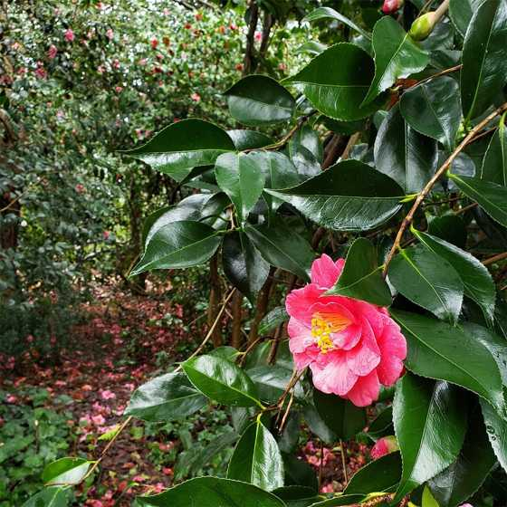
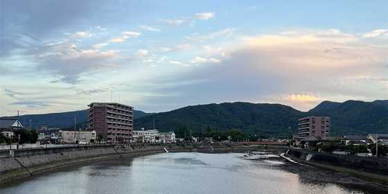
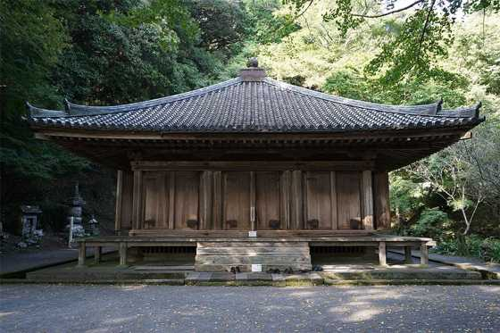
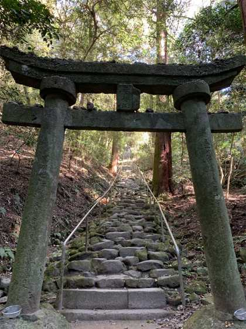
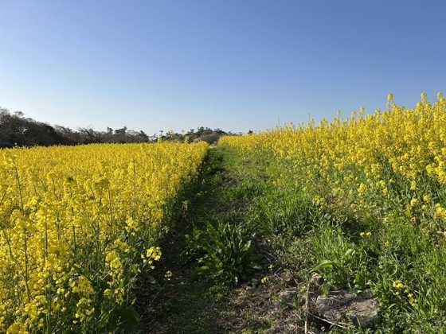
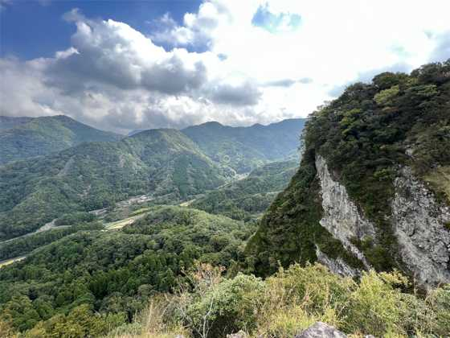
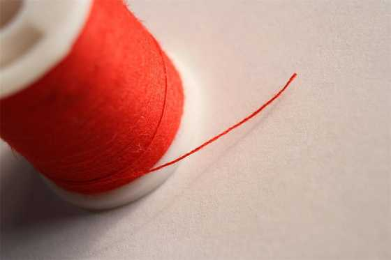
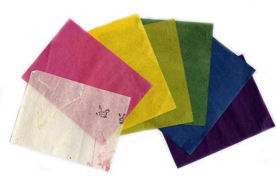
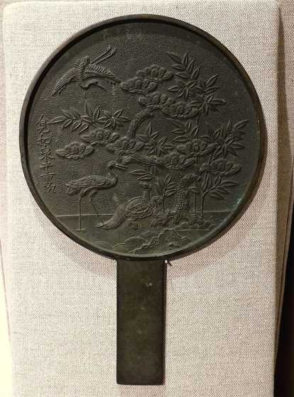

大分県豊後高田市新町・美容室
和のしつらえの中で、
頭ごとお湯にひたる。
髪結屋 心は、生まれ故郷の豊後高田で開かれた、予約制のプライベートサロン。赤を効かせた和の空間で、炭酸泉のヘッドスパをどうぞ。
掲載の写真はフリー素材のイメージで、店舗の実際の様子ではありません。実際の店内・施術写真は貴店ご提供のものに差し替えます。
お店のこと
愛知での17年を経て、ふるさと豊後高田へ。
地元情報サイトの紹介記事(2024年4月)によると、店長のRISAさんは愛知県で17年間、同名の店舗で働いたのち、生まれ故郷の豊後高田市に戻って「髪結屋 心-coco-」を開きました。「和モチーフが好き」とのことで、店内は和の要素とアクセントカラーの赤で統一されているそうです。
女性専用の予約制プライベートサロンで、お店の前には駐車スペースが3台分あると紹介されています(記事時点の情報)。
情報源: 地元情報サイトの新店紹介記事 / Instagram
上記の事実以外(見出しの言い回しなど)は制作側の表現です。店名の由来や理念は確認できていないため記載していません。

豊後高田・大分の景色(イメージ)


口コミ
ご来店後の声(イメージ例)
ふわっと良い香りの中で、いつの間にか眠っていました。頭が軽くなって、帰り道の景色まで明るく見えました。
落ち着いた和の雰囲気で、他のお客様と顔を合わせず過ごせるのが嬉しいです。香りを選ぶ時間も楽しみのひとつです。
髪のことを丁寧に聞いてくださり、安心してお任せできました。また季節の変わり目に伺いたいです。
上記は制作側が作成したイメージ例で、実在のお客様の声ではありません。
アクセス
豊後高田市新町
- 住所
- 大分県豊後高田市新町2825-2
- 電話
- 準備中
- 営業時間
- 準備中
- 定休日
- 準備中
- 予約
- 準備中
店長の日々の様子やスタイルはInstagramで紹介されています。
Instagram @kamiyuiyacoco
豊後高田・大分の景色(イメージ)




トップの椿の写真の撮影地は異なります(イメージ)
写真クレジット
- camellia.jpg: Camellia japonica 'Akashigata' in Nymans Garden / Andy Li / CC0 / 出典
- katsura-river.jpg: Katsura River Bungotakada(トリミング) / Bpcon98 / CC0 / 出典
- fukuji-odo.jpg: Fuki-ji Ō-dō / JNN360 / CC BY-SA 4.0 / 出典
- kumano-torii.jpg: Kumano magaibutsu staircase / Bpcon98 / CC0 / 出典
- nagasakibana.jpg: Rape blossoms at Nagasakibana, Oita / Bpcon98 / CC0 / 出典
- nakayama-senkyo.jpg: Nakayamasenkyo (Ebisudani) / Bpcon98 / CC0 / 出典
- kushi-comb.jpg: Kushi(トリミング) / Kayopos / パブリックドメイン / 出典
- scissors.jpg: Standard-type haircutting shears for hairdressers / Pittigrilli / CC BY-SA 4.0 / 出典
- mizuhiki.jpg: Mizuhiki / SilverBullet X / CC0 / 出典
- washi.jpg: Washi paper (Sugihara paper) / Tomomarusan / CC BY 2.5 / 出典
- thread-spool.jpg: Spool of red thread / www.photos-public-domain.com / CC0 / 出典
- shibori-indigo.jpg: Sunlight filters through tied-and-indigo-dyed (shibori) fabric / Katie / CC BY-SA 2.0 / 出典
- hand-mirror.jpg: Wedding hand mirror, Japan, Early Edo period / Daderot / CC0 / 出典